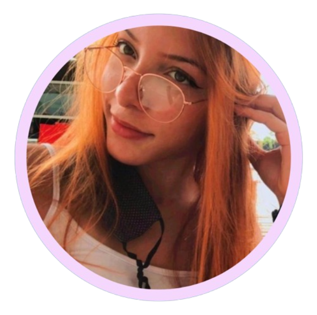

Mariana
Lourenço

Analísta e Desenvolvedora de Sistemas!
SOBRE MIM:
ㅤSou estudante de Análise e Desenvolvimento de Sistemas, com o objetivo de me tornar uma desenvolvedora Full Stack.
Em meio a 2024, consegui meu primeiro emprego na área, o que me proporcionou uma valiosa oportunidade de aprimorar meus conhecimentos. Aprendi a utilizar ferramentas como Power BI e me aprofundei no framework Angular, além de trabalhar com Web Forms, SQL Server e ADO.NET. Paralelamente, continuo desenvolvendo minhas habilidades nas stacks com as quais tenho mais familiaridade, como HTML, CSS, JavaScript, React.js e Node.js.
Meu objetivo é fortalecer minhas habilidades técnicas e contribuir ativamente para projetos, enquanto aprendo com uma equipe experiente.
FORMAÇÃO:
UNIME, Lauro de Freitas — Ensino Superior.
Agosto de 2022 - Em andamento
Curso Tecnólogo de Análise e Desenvolvimento de Sistemas (EAD).
SENAI, Lauro de Freitas — Ensino Técnico.
Janeiro de 2023 - Em andamento
Curso Técnico de Desenvolvimento de Sistemas (PRESENCIAL).
PROJETOS:
➺ PRIME EVENTS: Sistema web para gestão de eventos.
Aplicativo que facilita a organização de eventos, com ênfase na confirmação de presença, garantindo maior precisão e eficiência na gestão de participantes e atividades.
➺ IOT: Sistema RFID para Registro de Presença.
Utiliza React, Node.js, MySQL e MQTT para IoT, permitindo o cadastro de pessoas, registro de presença em tempo real e integração com dispositivos IoT, garantindo segurança e eficiência no monitoramento de eventos.
➺ QUEEN: Plataforma Web de Distribuição de Notas.
Automatiza a distribuição de notas, facilitando a gestão de turmas e atividades para docentes, reduzindo erros e aumentando a eficiência.
Disponível via navegador, promove maior precisão e transparência no processo de avaliação.